文字
背景
行間


SSH活動掲示板
SSH活動報告
第９回科学の甲子園千葉県大会
11月16日(土) 千葉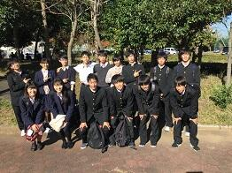県総合教育センターにて、第９回科学の甲子園千葉県大会が行なわれました。本校からも１年生チームと２年生チームの計２チームが参加し、健闘しました。結果は後日わかります。
ＳＳＨ高大接続枠の徹底探究基礎講座「単振り子の周期測定」
投稿日時 : 2019/11/03
 sakura-h
sakura-h
11月3日（日）県立佐倉高校を会場として、ＳＳＨ高大接続枠の徹底探究基礎講座「単振り子の周期測定」が行われました。午前は単振り子の周期ついて学ぶ講義があり、午後は実際に単振り子の周期を測定し、何度（角度）で周期性が崩れるのか調べました。
 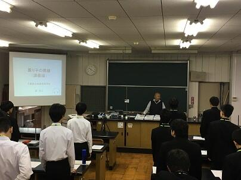
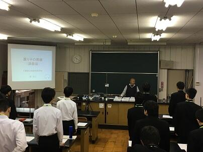


 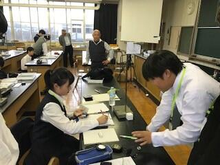
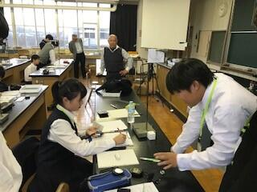
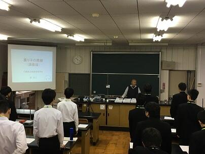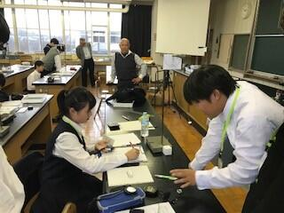 2年H組（理数科）による1年生へのポスター発表
投稿日時 : 2019/10/08
sakura-h
10月8日7限に、2年H組（理数科）による1年生へのポスター発表が行われました。2年生の説明を1年生は真剣に聞いていました。和やかな雰囲気の中にも、質問も出るなど真剣なやりとりが行われていました。
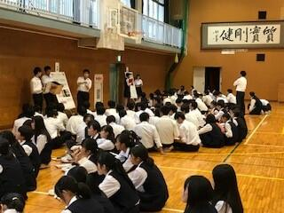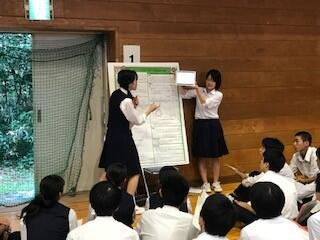
 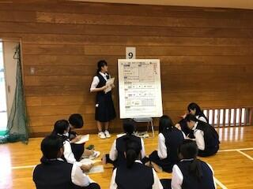
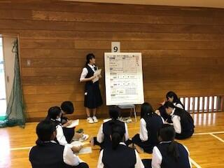
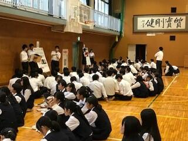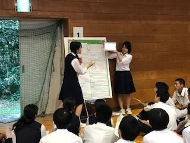
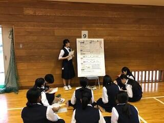 SSH徹底探究基礎講座「千葉県の外来生物について考える」
10月6日（日）県立長生高校を会場として、ＳＳＨ高大接続枠の徹底探究基礎講座「千葉県の外来生物について考える」が行われ、本校１年生１０名が参加してきました。午前は外来生物について学ぶ講義があり、午後はカミツキガメの解剖実習を行い、その食性を調べました。


国内サイエンスツアー最終日
千葉大学海洋バイオシステム研究センターにて海岸生物観察実習を行いました。海岸の生物観察だけでなく、アクキガイ科巻貝の中腸腺を用いて、黄緑色から貝紫色に変化する化学反応の様子も観察しました。３日間とも天気に恵まれ、充実した研修となりました。
 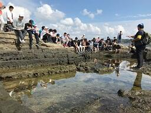
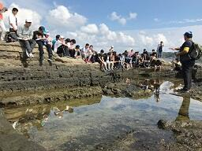

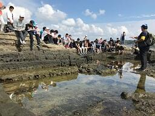 国内サイエンスツアー第２日
昨日の夜の学習も生徒は熱心に取り組みました（浴衣姿も見られます）。引き続き晴天に恵まれた本日（10月2日）はハンマーやクリノメーターを使った地層の観察の実習と夜の「葉っぱテスト」に向けた植物の観察を含めた森林実習を行いました。
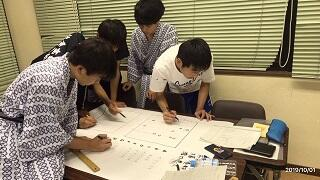
 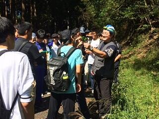
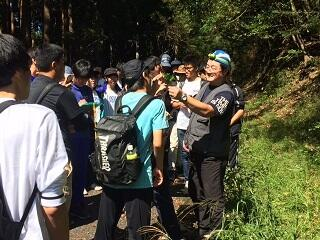
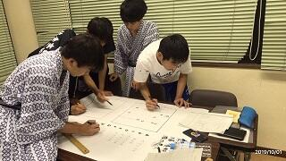
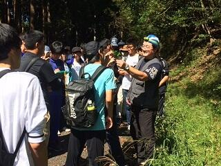 国内サイエンスツアー 第１日
国内サイエンスツアーで理数科１年40名、普通科１年6名が鴨川市を訪れています。本日(10月1日)の日中は森林実習調査を行いました。夜に班ごとに調査結果を模造紙にまとめます。
 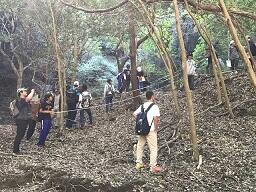
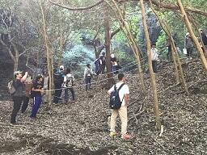

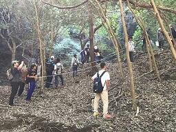 第13回高校生理科研究発表会
9月28日（土）千葉大学にて高校生理科研究発表会が行われました。２年理数科の生徒たちが日ごろの課題研究の成果を発表しました。物理Ⅰ分野で「集音レンズを用いた新たな通信機器の開発」（月山・後屋敷）、化学Ⅰ分野で「ビスマス極板を用いた電気分解における色の変化と条件」（薄田・江尻・安井・山口）の計２チーム６名が優秀賞を受賞しました。また、朝日新聞社教育総合本部長賞として、本校理科教諭の村瀬恵正教諭が受賞しました。
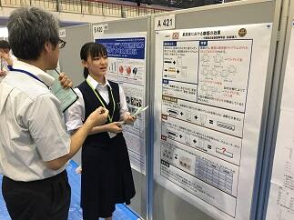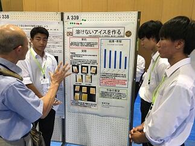


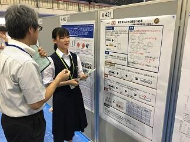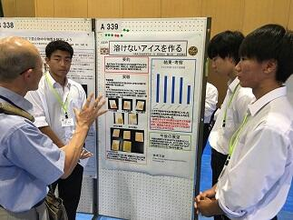
SSH徹底探究基礎講座「手賀沼の水質調査」
投稿日時 : 2019/09/16
sakura-h
9月15日（日）に県立柏高校を会場として、ＳＳＨ高大接続枠の徹底探究基礎講座「手賀沼の水質調査」が行なわれ、本校１年生７名が参加してきました。午前の実習は「手賀沼で採水した試料２種類についてＣＯＤの測定を行い、水質について考察する」があり、午後は実習のまとめのポスター作成と発表といった内容でした。

 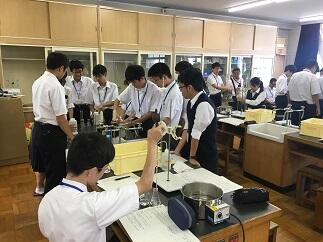
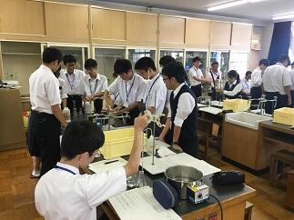
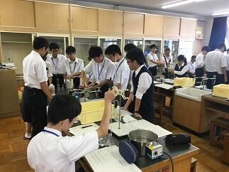 SSH講座 シリーズ生物観察２「人の脳が豚の脳を見て考える」
投稿日時 : 2019/09/03
sakura-h
８月３１日に、SSH講座 シリーズ生物観察２「人の脳が豚の脳を見て考える」が本校生物実験室で実施されました。例年人気の講座で２５名の生徒が参加しました。実際に豚の頭を持ったり観察します。さらには注意深く解剖していき、目や内耳の構造や脳についても観察をしていきます。教科書の中の図や写真だけでは分からないことを体験できる素晴らしい講座です。医学や獣医師系統を志す生徒には、生命の尊さを含め貴重な体験になったと思います。生徒の真剣な表情が印象に残りました。解剖ですので、少し刺激的な画像もありますので注意してください。


 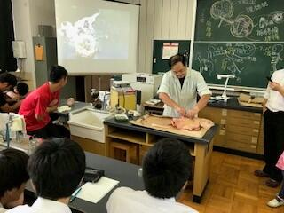
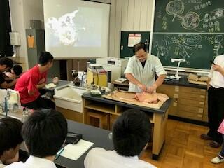


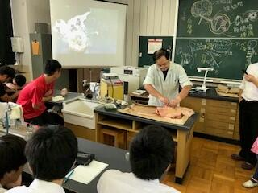 ＳＳＨ講座「チバニアンってなんだ？」
投稿日時 : 2019/08/09
sakura-h
8月8日(木)に2年生1名と1年生理数科7名でＧＳＳＰに申請中の標準模式地、市原市田淵の露頭に行ってきました。講師は千葉県中央博物館地学研究科の 高橋 直樹 先生です。約77万年前に地磁気が逆転したと言われる証拠となる地層を見学しました。右下写真の白い看板の20㎝上（少し色が変わってへこんでいる様子がわかります）からが「チバニアン」と呼ばれる予定の地層です。（上総層群国本層と呼ばれる地層です）
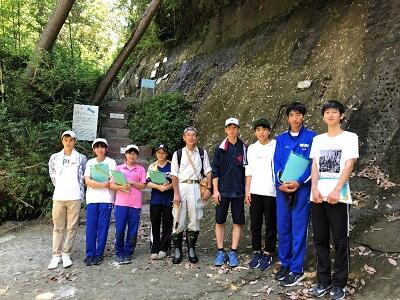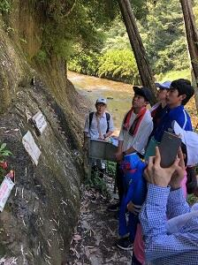
その後、養老渓谷に場所を移し、梅が瀬層、大田代層、黄和田層を観察したり、地層の調査方法を実習しました。1000ｍを超える深海に堆積した地層にもかかわらず、木片の化石が発見できました。（右下写真）
 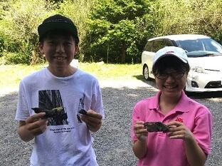
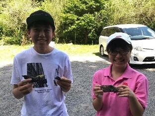
最後は別名「養老の滝」でおなじみの「粟又の滝」（写真奥）で１ｍにも及ぶ火山灰層を観察し、一日の行程を終えました。暑い中ではありましたが、充実した野外実習となりました。

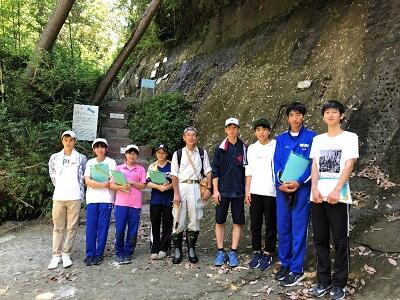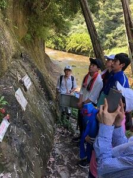
その後、養老渓谷に場所を移し、梅が瀬層、大田代層、黄和田層を観察したり、地層の調査方法を実習しました。1000ｍを超える深海に堆積した地層にもかかわらず、木片の化石が発見できました。（右下写真）
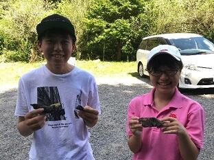最後は別名「養老の滝」でおなじみの「粟又の滝」（写真奥）で１ｍにも及ぶ火山灰層を観察し、一日の行程を終えました。暑い中ではありましたが、充実した野外実習となりました。
ＳＳＨ生徒研究発表会 ＩＮ 神戸
8/7(水)、8日(木)の2日間、神戸国際展示場にてSSH生徒研究発表会に3年H組の女子２名が「はたらく糖分〜藍染の新還元剤発見！？〜」というタイトルで参加しています。国内からSSH218校、国外から23校参加しており、生徒たちは研究内容に関して、積極的に意見交換をしていました。


徹底探究基礎講座
投稿日時 : 2019/08/06
sakura-h
8月4日（日）に木更津高校を会場として，ＳＳＨ重点枠（高大接続）の徹底探究基礎講座「画像解析ソフトを用いた天文分野の実習」が行なわれ，本校1年生9名が参加してきました。午前は講義（太陽の表面構造とシュテファン・ボルツマンの法則について、黒点の温度測定の原理）があり、午後の実習は画像解析ソフトMakali`i（マカリ・マカリィ）を使って①太陽面の周辺減光の様子の調査②黒点の温度をマカリの「測光」機能を使って求めるグループ活動③マカリを天文画像以外の解析で活用する探究活動を考える④グループ活動の成果をスライドで発表）といった内容でした。これは県立SSH校の柏高校・長生高校・船橋高校・佐倉高校・木更津高校と千葉大学が「SSH高大接続コンソーシアム」という団体を組んで“グローバルなプロジェクトを牽引する次世代型科学技術系リーダーの創出”を目標に取り組んでいる活動のプログラムの１つです。本校の３４名の1年生がこの高大接続プログラムに希望し参加しています。
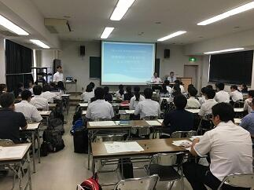
佐倉アクティブ「東大・小石川植物園で樹木と向き合う」
投稿日時 : 2019/08/01
sakura-h
令和元年7月27日（土）
佐倉アクティブ「東大・小石川植物園で樹木と向き合う」
講師：本校生物科教諭
東京大学大学院理学系研究科附属植物園（小石川植物園）に理科好き・植物好きが集まり，植物の徹底的な観察と解説，植物学の楽しさについて語り合いました。水道橋駅を出るやいなや樹木の学習がスタート。数々の街路樹の種名や，バラ科サクラ属の分類鑑別点などを覚えながら，植物学の世界にどっぷり浸る熱い一日が始まりました。園内の柴田記念館では専門職員に歴史などをご講義いただき，有名なメンデルのブドウやニュートンのリンゴ，精子発見のソテツやイチョウといった記念碑的な植栽に触れながら，感慨深く観察しました。最新のAPG分類体系による知見も交えながら，教科書レベルを超えたハイレベルな植物学習を行いましたが，本物を間近で見ながらの学習は参加者にとってたいへん稀有な体験となったことでしょう。昼食は東大本郷キャンパスの食堂でいただき，その後キャンパス内を案内しながら弥生キャンパスにて校舎内を見学，さらに工学部や理学部，薬学部，医学部などを巡りました。喧騒の都心にありながら静寂のひとときを感じる三四郎池の散策，溢れんばかりの蔵書数を誇る生協書店で本を買うなど，植物学と学問の香りに向学心と決意を新たにした一日でした。
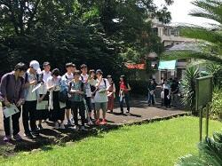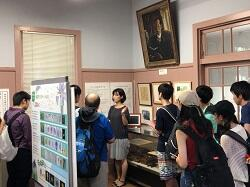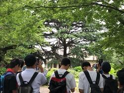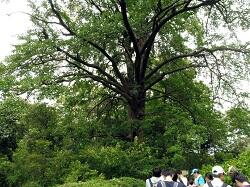


 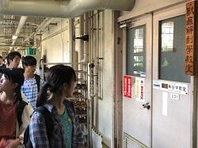
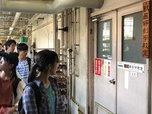
佐倉アクティブ「東大・小石川植物園で樹木と向き合う」
講師：本校生物科教諭
東京大学大学院理学系研究科附属植物園（小石川植物園）に理科好き・植物好きが集まり，植物の徹底的な観察と解説，植物学の楽しさについて語り合いました。水道橋駅を出るやいなや樹木の学習がスタート。数々の街路樹の種名や，バラ科サクラ属の分類鑑別点などを覚えながら，植物学の世界にどっぷり浸る熱い一日が始まりました。園内の柴田記念館では専門職員に歴史などをご講義いただき，有名なメンデルのブドウやニュートンのリンゴ，精子発見のソテツやイチョウといった記念碑的な植栽に触れながら，感慨深く観察しました。最新のAPG分類体系による知見も交えながら，教科書レベルを超えたハイレベルな植物学習を行いましたが，本物を間近で見ながらの学習は参加者にとってたいへん稀有な体験となったことでしょう。昼食は東大本郷キャンパスの食堂でいただき，その後キャンパス内を案内しながら弥生キャンパスにて校舎内を見学，さらに工学部や理学部，薬学部，医学部などを巡りました。喧騒の都心にありながら静寂のひとときを感じる三四郎池の散策，溢れんばかりの蔵書数を誇る生協書店で本を買うなど，植物学と学問の香りに向学心と決意を新たにした一日でした。
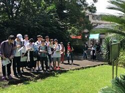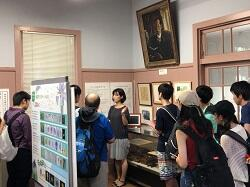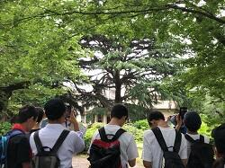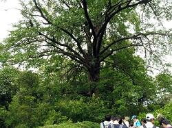
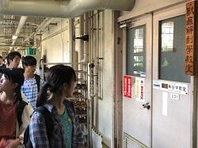 第９回千葉サイエンススクールフェスティバル
７月２８日（日）に第９回千葉サイエンススクールフェスティバルが千葉工業大学津田沼キャンパスで行われ、科学系部活動（生物部・電気部・化学部）の生徒２３名が参加しました。午前の部は、小中学生に向けてブースの運営や、夏休みの自由研究についての相談コーナーを担当しました。午後の部では科学に関するゲームを行い、他校の高校生との交流を深めました。
【午前の部】
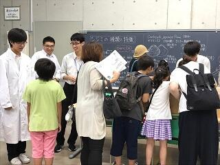
生物部（しじみ釣り） 電気部（エレクトラム）
 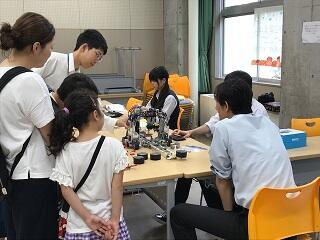
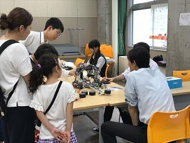
化学部（スライム作り） 自由研究の相談ブース
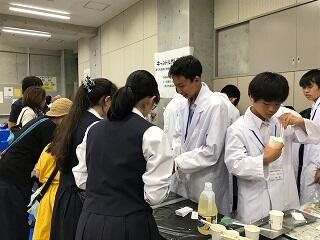
【午後の部】
サイエンスコミュニケーション（限られた材料を使ってどれだけ強度の高い橋を作れるかを競いました。

【午前の部】
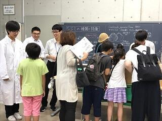
生物部（しじみ釣り） 電気部（エレクトラム）
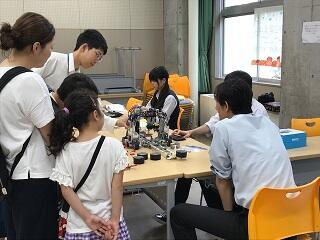化学部（スライム作り） 自由研究の相談ブース
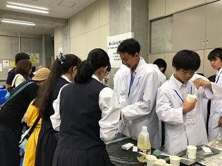
【午後の部】
サイエンスコミュニケーション（限られた材料を使ってどれだけ強度の高い橋を作れるかを競いました。
SS課題研究Ⅱ発表会
投稿日時 : 2019/07/19
sakura-h
７月１６日（火）にSS課題研究Ⅱ発表会が行なわれ、生徒たちは限られた時間の中で課題研究の結果をプレゼンテーションソフトを用いて熱心に説明しました。質疑応答も行なわれ活発なやりとりが展開されました。
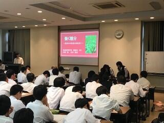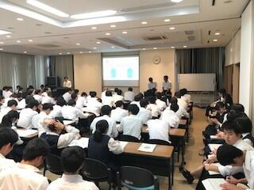
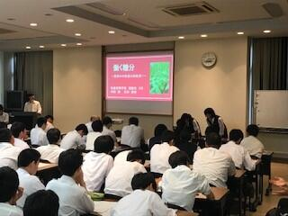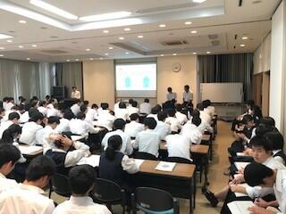
SSH講座 「植物の成分を精製してみよう！」
投稿日時 : 2019/07/10
sakura-h
令和元年７月９日（火）の午後、佐倉市の株式会社常磐植物化学研究所において「植物の成分を精製してみよう！」をテーマにSSH講座が開催されました。１年生１７名、２年生７名の計２４名が参加し、施設見学、ハーブ園研修、実験実習を行いました。
施設見学では、原料から製品として出荷されるまでの一連の流れや研究室での製品チェック、製品の管理の様子などを丁寧に説明していただきました。
ハーブ園では、新設された薔薇コーナーで薔薇の中でも最も香りが良いとされ「薔薇の女王」ともいわれるダマローズの香りをかいだり、天然甘味料として知られ砂糖よりも低カロリーであるステビアの葉の甘さ体験をはじめ、カレーププランツ、ビロードモーズイカ、ニッコウキスゲなどについて触れたり、においを確認したり、味をみたりしながら研修しました。最後に蒸し暑さを和らげるようなマロウ、ニッキ、レモングラス、ペーパーミントで作られた暖かい特性ハーブティーも試飲しました。
今年の実験実習は、昨年度までとは大きく変わり，ブルーベリーの果実からのアントシアニンの精製を固相抽出法にて行いました。高校では、使う機会がほとんどない器具を使っての実習でしたが、皆、無事に目的とするものを分離精製出来ました。
午後の４時間ほどの講座でしたが、とても充実した講座になりました。

 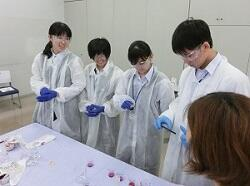
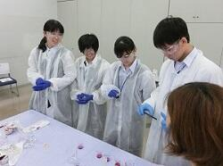 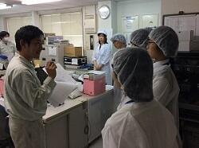
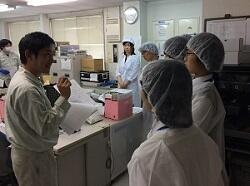
施設見学では、原料から製品として出荷されるまでの一連の流れや研究室での製品チェック、製品の管理の様子などを丁寧に説明していただきました。
ハーブ園では、新設された薔薇コーナーで薔薇の中でも最も香りが良いとされ「薔薇の女王」ともいわれるダマローズの香りをかいだり、天然甘味料として知られ砂糖よりも低カロリーであるステビアの葉の甘さ体験をはじめ、カレーププランツ、ビロードモーズイカ、ニッコウキスゲなどについて触れたり、においを確認したり、味をみたりしながら研修しました。最後に蒸し暑さを和らげるようなマロウ、ニッキ、レモングラス、ペーパーミントで作られた暖かい特性ハーブティーも試飲しました。
今年の実験実習は、昨年度までとは大きく変わり，ブルーベリーの果実からのアントシアニンの精製を固相抽出法にて行いました。高校では、使う機会がほとんどない器具を使っての実習でしたが、皆、無事に目的とするものを分離精製出来ました。
午後の４時間ほどの講座でしたが、とても充実した講座になりました。
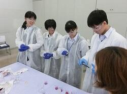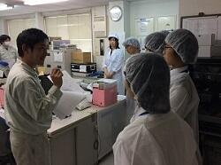 千葉県課題研究会に参加しました
平成３１年３月１６日（土）に千葉工業大学を会場に開催された平成３０年度第１０回千葉県課題研究会に参加しました。
午前は、分科会形式での口頭発表、午後はポスター発表でした。本校からは、口頭発表部門の物理、化学、生物、地学、数学の５分野に各１組ずつが参加し、日ごろの課題研究の成果を発表しました。
また、ポスター発表では、口頭発表の５分野に加え、ＳＧＨ分野にも参加ました。物理分野に８組、化学分野に２組、生物分野に６組、地学分野に１組、数学分野に１組の１８組、ＳＧＨ分野に３組の計２１組が研究の成果を発表しました。ＳＧＨ分野は、今年度初めて設けられた分野で、本校から参加した３組の１年生は、いずれも丁寧に研究の内容を紹介していました。
 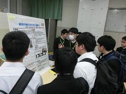
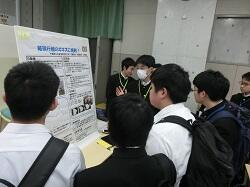
 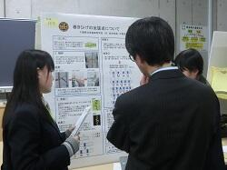
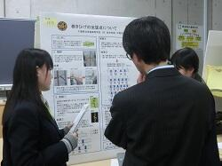
午前は、分科会形式での口頭発表、午後はポスター発表でした。本校からは、口頭発表部門の物理、化学、生物、地学、数学の５分野に各１組ずつが参加し、日ごろの課題研究の成果を発表しました。
また、ポスター発表では、口頭発表の５分野に加え、ＳＧＨ分野にも参加ました。物理分野に８組、化学分野に２組、生物分野に６組、地学分野に１組、数学分野に１組の１８組、ＳＧＨ分野に３組の計２１組が研究の成果を発表しました。ＳＧＨ分野は、今年度初めて設けられた分野で、本校から参加した３組の１年生は、いずれも丁寧に研究の内容を紹介していました。
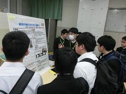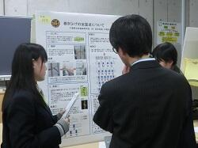 東邦大学－韓国国立慶尚大学校 合同シンポジウム
投稿日時 : 2019/02/26
sakura-h
平成３１年２月２３日（土）に東邦大学習志野キャンパスで開催された「4th Toho Univ.-GNU Joint Symposium on Advanced Chemical Science」に理数科２年生の２組４名が参加しました。
当日は、東邦大学および韓国国立慶尚大学校の研究者や大学院生、県内外５校からの高校生とともに、昼食時間以外のコミュニケーションは、ほぼオールイングリッシュという一日を過ごしました。
高校生は、フラッシュプレゼンテーションとポスター発表で日頃の研究の成果を発表しました。
その結果、多々良実子さん・山口依子さんがベストポスター賞を受賞しました。「Water Clean Project～How to clean water with Charcoal～」（ウォーター・クリーン計画！～炭を用いた水の浄化～）という研究発表でした。
 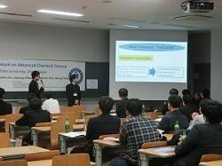
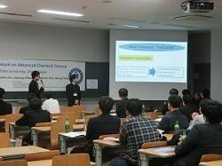 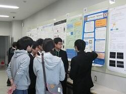
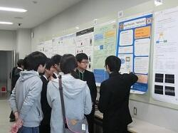
当日は、東邦大学および韓国国立慶尚大学校の研究者や大学院生、県内外５校からの高校生とともに、昼食時間以外のコミュニケーションは、ほぼオールイングリッシュという一日を過ごしました。
高校生は、フラッシュプレゼンテーションとポスター発表で日頃の研究の成果を発表しました。
その結果、多々良実子さん・山口依子さんがベストポスター賞を受賞しました。「Water Clean Project～How to clean water with Charcoal～」（ウォーター・クリーン計画！～炭を用いた水の浄化～）という研究発表でした。
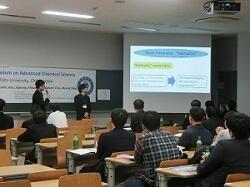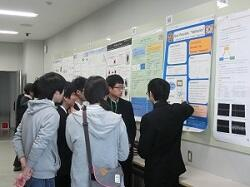 第７回生徒研究成果合同発表会 The7th Toyama Science Symposium
投稿日時 : 2019/02/04
sakura-h
平成３１年２月３日（日）に東京都立戸山高等学校で行われた第７回生徒研究成果合同発表会に参加し、理数科２年生の５チームが発表を行いました。複数の専門家からアドバイスをいただくことができ、今後の研究方針を考えるよい機会となりました。また、理数科１年生も４名見学しました。
| 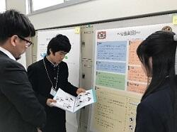 | 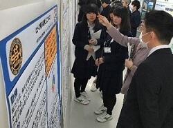 | 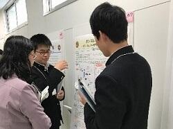 |
| （数学）ｎ色問題 ～星形正五角形～ | （生物）蟻がとう～ギ酸で防カビに挑む～ | （生物）ダンゴムシは美食家？ ～ダンゴムシの好物についての研究～ |
| 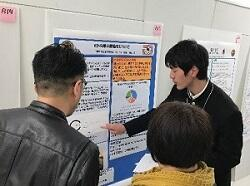 | 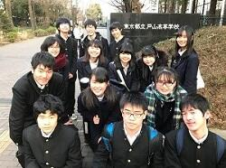 | |
| （生物）ヒトの眼の解像度について | （地学）消波ブロックによる砂浜への影響 | |